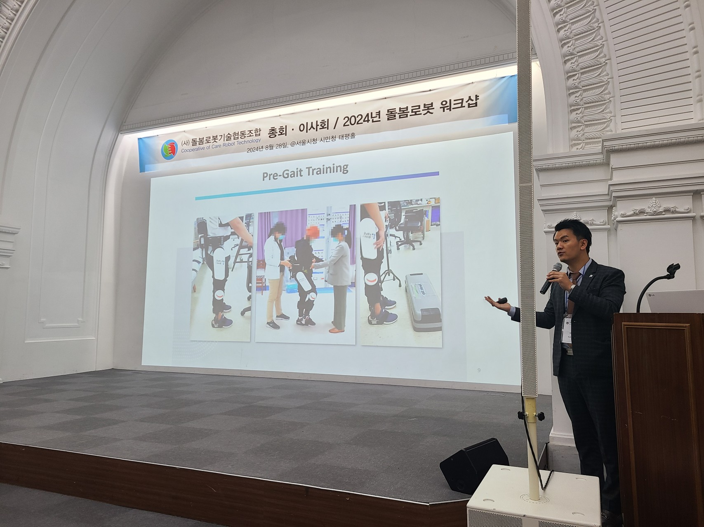
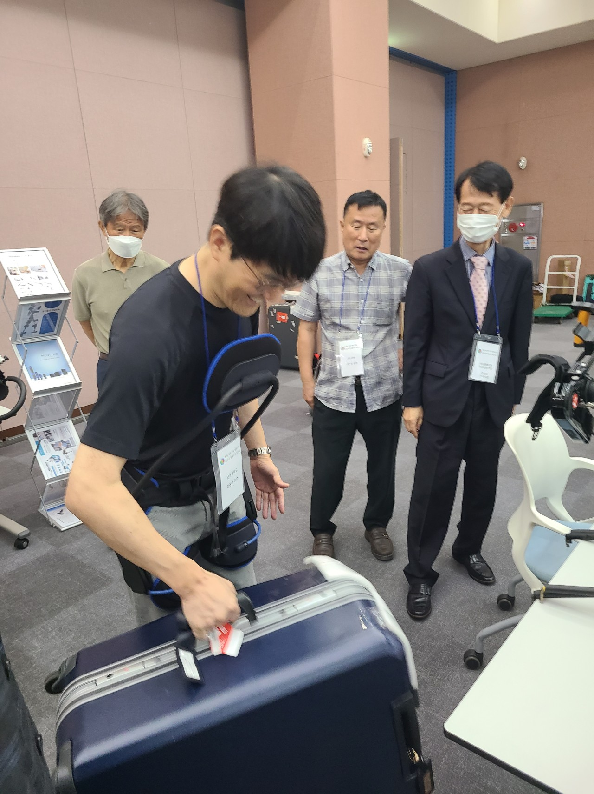
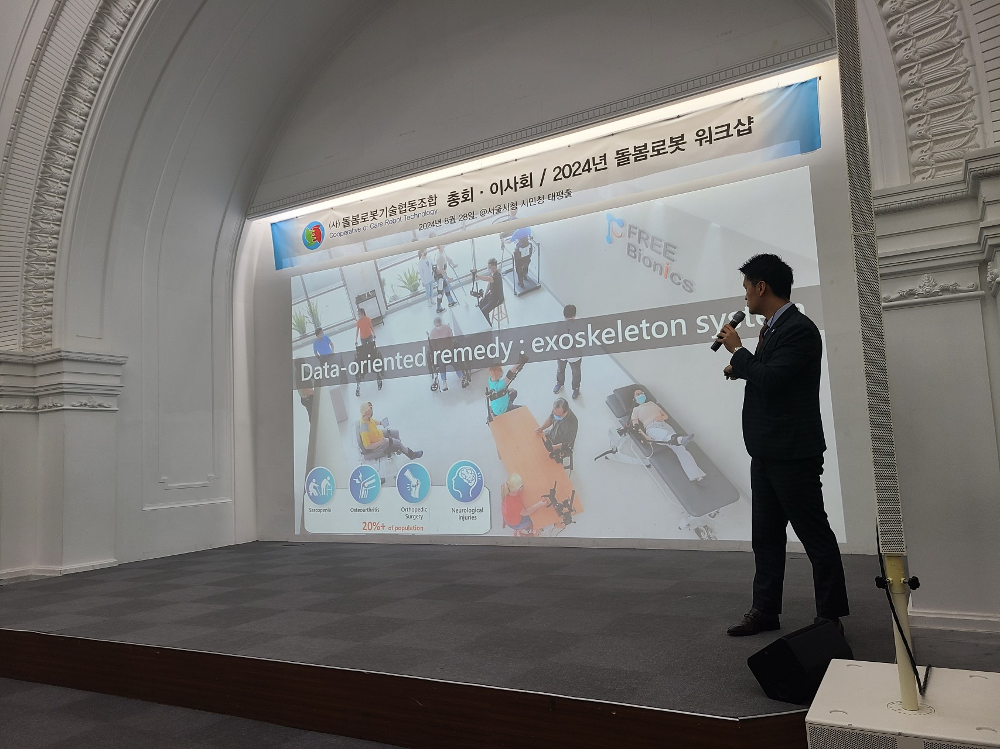
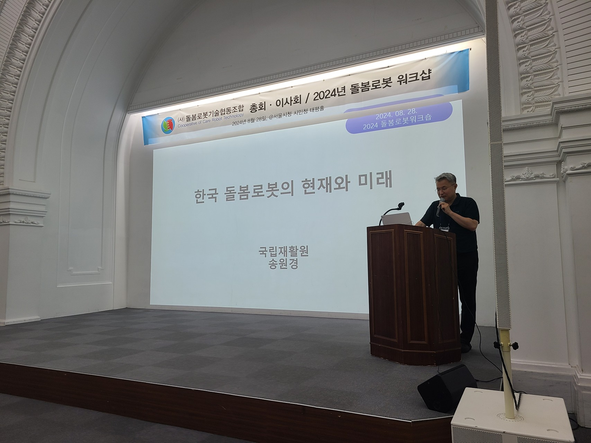
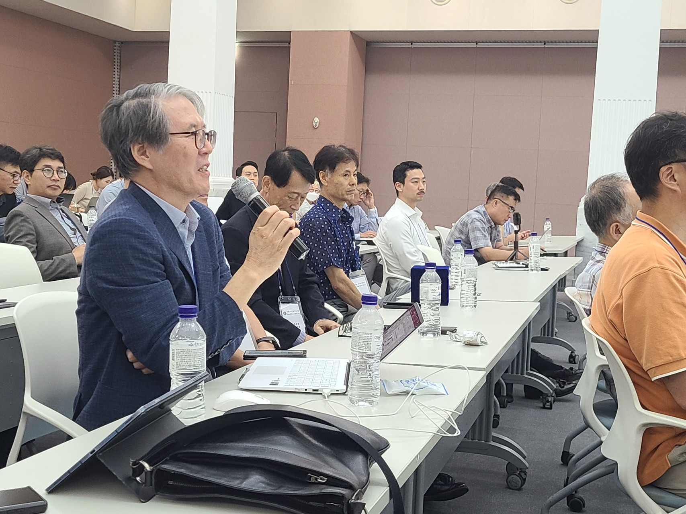

Care Robot Archives
2026 Care Robot Workshop & KCCR General Assembly
The Korea Cooperative of Care Robots (KCCR) successfully hosted the 2026 Care Robot Workshop and General Assembly to explore cutting-edge research achievements and field applications in care robotics.
| Item | Details |
|---|---|
| Event Title | 2026 Care Robot Workshop & KCCR General Assembly |
| Date & Time | Friday, February 27, 2026 (13:00 ~ 18:00) |
| Venue | Suh Seong-hwan Hall (1F), Center for Medical Innovation (CMI), Seoul National University Hospital |
| Organizer | Korea Cooperative of Care Robots (KCCR) |
| Registration Fee | KRW 10,000 (On-site credit card payment) |
| Contact | Manager Hee-Ok Yang (+82-10-8650-6994) |
Program Schedule
| Time | Session / Lecture Topic | Speaker / Affiliation |
|---|---|---|
| 13:00 ~ 13:20 | Registration | Secretariat |
| 13:20 ~ 14:00 | KCCR General Assembly | KCCR Executive Board |
| 14:00 ~ 14:40 | AI Applications in the Field of Care Robotics | Dr. Minsu Jang (ETRI) |
| 14:40 ~ 15:20 | Appropriate Deployment of Care Robots in Caregiving Sites | Director Youngran Lee (Korean Gerontological Nursing Society, KNA) |
| 15:20 ~ 16:00 | Commercialization Challenges of Care Robots | Chairman Kyunghwan Kim (KCCR) |
| 16:00 ~ 16:40 | [Special Lecture] 40 Years of Robotics Research, and Care Robots | Dr. Seungho Kim (Honorary Advisor / Former Chairman, KCCR) |
| 16:40 ~ 17:20 | Current Status of Care Robot R&D in Korea | Director Won-Kyung Song (National Rehabilitation Center) |
| 17:20 ~ 18:00 | General Discussion & Wrap-up | All Participants |
Event Photo Gallery

Workshop Presentation Scene 1

Workshop Presentation Scene 2
2024 Public Workshop on Care Robots
Organized to address Korea's rapid population aging and shortage of caregiving workforce, the 2024 Public Workshop aimed to raise awareness and expand the reach of care robotics, featuring technical presentations and live demonstrations[cite: 10, 11].
| Item | Details |
|---|---|
| Event Title | 2024 Public Workshop on Care Robots |
| Date & Time | Wednesday, August 28, 2024 (10:00 ~ 13:00) |
| Venue | Taepyeong Hall (B2F), Citizens Hall, Seoul City Hall |
| Organizer / Sponsor | Hosted by Cooperative of Care Robot Technology / Sponsored by NT Robot Co., Ltd. |
| Contact | Manager Hee-Ok Yang (+82-10-8650-6994), Chairman Kyunghwan Kim (+82-10-3716-3460) |
Program Schedule
| Time | Session / Lecture Topic | Speaker / Affiliation |
|---|---|---|
| 09:00 ~ 10:00 | Introduction of KCCR & Member Companies | Secretariat |
| 10:00 ~ 11:00 | [Invited Lecture] Present Status and Future of Korean Care Robots | Dr. Won-Kyung Song (National Rehabilitation Center) |
| 11:00 ~ 12:30 | [Invited Lecture / Demo] Commercialization Cases & Live Demos of Taiwan Care Robots | Free Bionics (Free Robotics, Taiwan) |
| 12:30 ~ 12:50 | Q&A Session | All Participants |
| 12:50 ~ 13:00 | Closing Remarks | Organizers |
Event Photo Gallery (2024)

Taiwan Free Bionics Presentation Scene

Wearable Exosuit Demonstration Scene

Taiwan Free Bionics Presentation Scene 2

Lecture by Dr. Won-Kyung Song (NRC)

Q&A Session